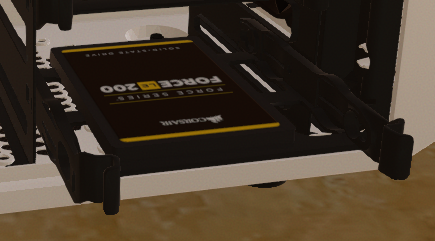
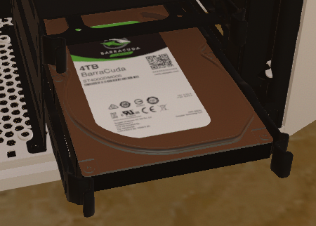

Le sigle HDD (« Hard Disk Drive ») désigne le disque dur traditionnel à mémoire de masse magnétique.
Créé par IBM en 1956, il a vu ses capacités être considérablement démultipliées au fil des décennies,
passant de 5 mégaoctets pour le premier modèle à plus de 14 téraoctets pour les versions les plus récentes :
soit une multiplication par 2,8 millions de sa capacité de stockage.
Dans un disque HDD, on trouve des plateaux rigides en rotation (autrefois en aluminium, aujourd’hui en verre ou en céramique) recouverts d’une fine couche magnétique,
dans laquelle les données sont stockées sous la forme d’un code binaire (des 0 et des 1).
Les données sont lues ou écrites sur le disque à l’aide des têtes de lecture et d’enregistrement qui sont situées à proximité immédiate.
Lorsqu’une tête est traversée par un champ magnétique, elle peut lire le code binaire qui est contenu sur la surface,
mais aussi altérer ce champ magnétique et donc modifier le code binaire qui est stocké sur le disque.
Un disque dur contient par ailleurs un connecteur qui assure l’alimentation électrique,
ainsi que des circuits électroniques qui contrôlent le mouvement mécanique des plateaux et interprètent les signaux électriques des têtes de lecture/écriture.
Le disque dur est omniprésent dans tous les appareils informatiques du globe dont notamment les ordinateurs et les serveurs,
bien qu’il soit de plus en plus concurrencé par le SSD (Solid-state drive) à mémoire flash.
Un disque électronique SSD est la nouvelle génération d'appareils de stockage utilisés dans les ordinateurs.
Ils remplacent les disques durs mécaniques traditionnels en utilisant des mémoires flash, nettement plus rapides.
Les anciennes technologies de stockage sur disque dur fonctionnent plus lentement, ce qui rend souvent votre ordinateur plus lent qu'il ne devrait.
Les disques SSD accélèrent considérablement les ordinateurs en raison de leurs faibles temps d'accès en lecture et de leurs débits rapides.
| Source 1 | Source 2 | *Image provenant du jeu "PC Building Simulator". |